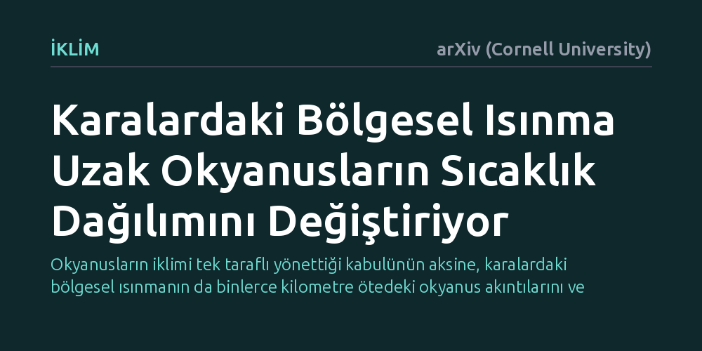

IKLIM · arXiv (Cornell University) · 2026-10-20
Araştırmacılar, karasal yüzey sıcaklığındaki bölgesel artışların uzak okyanuslardaki yüzey sıcaklıklarını nasıl etkilediğini gelişmiş bir iklim modeliyle inceledi. Bulgular, özellikle Güney ve Kuzey Amerika'daki kara ısınmasının atmosferik dalgalar tetikleyerek Pasifik ve Atlantik okyanuslarındaki sıcaklık modellerini belirgin biçimde değiştirdiğini gösteriyor.
Okyanusların iklimi tek taraflı yönettiği kabulünün aksine, karalardaki bölgesel ısınmanın da binlerce kilometre ötedeki okyanus akıntılarını ve küresel hava desenlerini doğrudan yönlendirebildiğini ortaya koyuyor.

Deniz yüzeyi sıcaklıklarının coğrafi dağılımı, yerkürenin iklim sistemini şekillendiren en temel etkenlerden biridir. Tropikal Pasifik'teki El Niño ve La Niña gibi devasa salınımların dünya genelindeki fırtınaları, kuraklıkları ve mevsimsel hava durumlarını nasıl kontrol ettiği uzun zamandır bilinmektedir. Bu nedenle iklim biliminde okyanuslar genellikle iklimi yönlendiren ana unsur, karalar ise bu etkileri pasif şekilde kabul eden alıcılar olarak görülmüştür.
Buna karşın karaların yüzey sıcaklığındaki değişimlerin geniş okyanus havzaları üzerindeki etkisi bugüne kadar yeterince araştırılmamıştır. Karalar sera gazı artışına okyanuslardan çok daha hızlı tepki verip ısındığı için, karasal ısınmanın okyanuslara doğru bir geri bildirim üretip üretmediği sorusu kritik hale gelmektedir. Bu ilişkinin aydınlatılması, gelecekteki bölgesel iklim krizlerinin ve yağış rejimlerinin doğru öngörülebilmesi açısından büyük önem taşımaktadır.
Araştırmacılar, karalardaki ısınmanın uzak okyanuslar üzerindeki etkisini incelemek için atmosfer ve okyanusu birlikte ele alan gelişmiş bir eşleşmiş küresel iklim modeli kullandı. Deney kapsamında dünyanın farklı coğrafi özelliklerine sahip beş ana karasal bölgesi belirlendi: Güney Amerika, Kuzey Amerika, Orta Afrika, Tibet Platosu ve Güneydoğu Asya adalarını içeren Denizel Kıta.
Araştırma ekibi bu bölgeler üzerinde hem ani sıcaklık artışları hem de zamana bağlı kademeli ısınma senaryoları uyguladı. Bilgisayar simülasyonları aracılığıyla karasal yüzeydeki ısınmanın atmosferik ısı transferini nasıl değiştirdiği, bu durumun rüzgâr akımlarını nasıl tetiklediği ve okyanusun derinliklerinden yüzeyine uzanan akıntıları nasıl etkilediği ayrıntılı olarak modellendi.
Simülasyon sonuçları, karasal ısınmanın okyanus yüzeyi sıcaklıklarını önemli ölçüde değiştirebildiğini, ancak bu etkinin karanın bulunduğu coğrafi konuma sıkı sıkıya bağlı olduğunu ortaya koydu. En çarpıcı sonuç Güney Amerika üzerinde görüldü: Güney Amerika karası ısındığında, atmosferdeki ısı farkı durağan Rossby dalgalarını harekete geçiriyor ve bu dalgalar tropikal doğu Pasifik kıyılarında rüzgârları güçlendiriyor. Güçlenen kıyı rüzgârları derindeki soğuk suları yüzeye çıkararak ekvatoral Pasifik'te La Niña benzeri daha soğuk bir ortalama durum meydana getiriyor.
Benzer uzaktan etkiler diğer bazı kıtalarda da gözlendi. Kuzey Amerika'daki kara ısınması Kuzey Pasifik'te yüzey soğumasıyla sonuçlanırken, Orta Afrika'daki ısınma tropikal Atlantik'te soğumaya yol açtı. Buna karşılık Tibet Platosu ve Denizel Kıta üzerindeki yapay ısınmalar, geniş ölçekli okyanus sıcaklık desenlerinde kayda değer bir değişim üretmedi. Bu durum, karaların okyanusları etkileme gücünün küresel değil, bölgesel atmosferik dalga koridorlarına bağlı olduğunu gösterdi.
Bu bulgular, geçmiş iklim dönemlerini canlandıran ve geleceği tahmin eden mevcut iklim modellerinin neden bazı hatalar yaptığını anlamak açısından yeni bir pencere açıyor. Tarihsel iklim simülasyonlarında deniz yüzeyi sıcaklık desenlerinde sıkça rastlanan model sapmalarının, aslında karasal yüzey sıcaklıklarının ve ısınma eğilimlerinin eksik veya hatalı hesaplanmasından kaynaklanabileceği görülüyor.
Araştırmacılar, bölgesel kara yüzeyi sıcaklığı değişimlerinin uzak okyanus sıcaklıkları üzerinde belirgin ve coğrafyaya bağımlı bir etki yaratabildiğini vurguluyor. Karalar ile okyanuslar arasındaki bu iki yönlü atmosferik köprünün doğru anlaşılması, gelecekteki küresel iklim modellerinin güvenilirliğini artırmak için karasal sıcaklıkların daha hassas şekilde modellenmesi gerektiğini ortaya koyuyor.